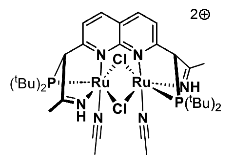
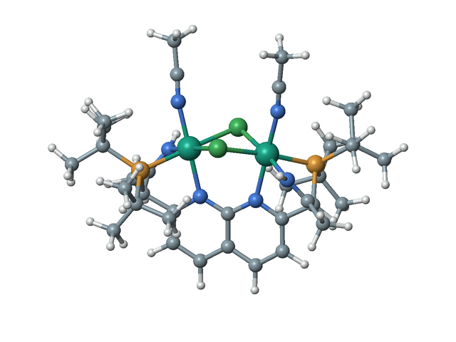
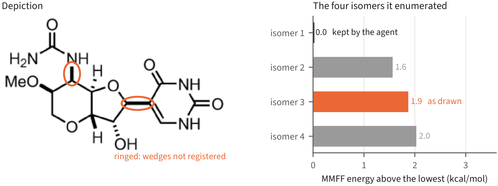

We’re releasing MolDraft, a benchmark that gives an AI agent one chemical drawing and asks for the three-dimensional coordinates of every atom, down to the last hydrogen. Across 300 drawings, the best of ten models built the depicted molecule 230 times.
A figure in a chemistry paper can convey a great deal in a few pen strokes. To start a simulation from that figure, a chemist has to unpack the shorthand, add the missing hydrogens and put each atom on the correct side of its neighbours. Read a solid wedge as a dashed one and the simulation can end up describing a different stereoisomer. MolDraft measures how much of that work an agent can do and lets you inspect each structure it submits.
Pass rate by model
- GPT-6.2 Astra76.7%
- GPT-6 Astra76.0%
- GPT-6.1 Sol71.3%
- Claude Opus 557.7%
- Claude Fable 5.154.0%
- Claude Opus 5.554.0%
- Qwen3.8-Max46.7%
- GPT-6 Sol45.7%
- Kimi K342.7%
- GPT-6 Luna25.0%
Each model had one attempt per drawing with the same four tools. Missing files and verification timeouts count as failures. GPT-6 Astra led the nine models in the paper with 228 passes. GPT-6.2 Astra reached 230 in the November 20 leaderboard update. Explore the full results.
Why start with a drawing?
A chemist can draw two chlorides between two metal atoms and trust a colleague to read each chloride as a bridge. Those few strokes specify which atoms must stay connected when the molecule is built in three dimensions. Many conformer-generation benchmarks give the model those connections at the outset. Starting with the published figure tests whether the agent can recover them for itself.
The MolDraft benchmark
Each task pairs a drawing with reference coordinates that we checked by hand. The 300 pairs span three kinds of chemistry. We chose 59 for their local geometry, including unusual arrangements around a central atom. Another 70 are natural products rich in rings and stereocentres. The remaining 171 come from research papers and include complexes with several ligands bound to a metal. Browse the drawings and their sources.
What the agent receives
Our Estructural agent gets one PNG and a short instruction to build the molecule and save it as answer.xyz. It can inspect the drawing, run code in a shell, view the 3D model it has built and optimize coordinates with constraints. It gets up to 100 model calls, with the internet and the reference structure out of reach. The final XYZ file lists an element and three coordinates per atom.
Where the task gets harder
Across the nine models in the paper, mean success fell from 65% on drawings with 18–51 atoms to 38% on those with 108–202 atoms, counting hydrogens. Size and chemistry vary together in this collection. All nine models solved just 29 of the same drawings.
Two tasks from the benchmark
A complex with two ruthenium centres
Find the two Ru labels in the drawing, then the two Cl labels between them. Each chloride binds to both ruthenium atoms. GPT-6 Astra preserved both bridges in its 102-atom structure and passed all three checks. On the same drawing, Qwen3.8-Max recovered the bonding and coarse coordination geometry but missed a stereochemical detail.
Input drawing

GPT-6 Astra’s submitted structure

One carbon in malayamycin A
GPT-6.1 Sol identified four of the six stereocentres in this natural product. Unsure how to read two bold bonds, it built all four possible combinations and picked the one with the lowest calculated energy. The drawing had already specified which one to build.

The selected structure came in 1.9 kcal/mol below the depicted isomer in the agent’s force-field calculation. It had the right bonds and one carbon facing the wrong way. Seven of the nine models in the paper recovered the depicted structure.
How MolDraft verifies a submission
Verification begins before an agent runs. We reviewed every drawing against its reference structure. For compounds from the literature, we traced the figure label to the deposited coordinates, checked the elements, connectivity and depicted stereochemistry, and excluded incomplete or mismatched pairs. An independent program then compares each submission with that reference in three steps.
Match atoms and bonds
The rows of an XYZ file can appear in any order. The verifier checks the inventory of atoms and uses xTB to estimate bond orders in both structures. MAPPA matches atoms in the submitted structure to atoms in the reference. We use that mapping to compare bonds, check stereochemistry and identify the sites around each metal.
Check stereochemistry
Hold fluorine and chlorine fixed in the example below. Swapping hydrogen and bromine reverses the configuration at carbon while preserving every bond. The verifier checks the mapped coordinates for changes at supported stereocentres, double bonds and stereogenic axes.
Check the sites around a metal
Two chlorides can both bind platinum and still occupy the wrong sites. In this square-planar example the chlorides sit 90° apart in the reference and 180° apart in candidate B. MolDraft checks whether the ligand sites remain occupied and whether the angles between them fall within its tolerances.
A pass means that the structure satisfied every applicable check. A flexible side chain can rotate and still pass. Whether the structure converges in a particular energy calculation is a further test.
Future possibilities
- Test agents on different drawings of the same molecule.
- Compare agents with conventional 2D-to-3D workflows.
- Measure how often verified structures converge during geometry optimization.
Citation
Hanyong Xu, Yunheng Zou, Olalla Nieto Faza, Juan Bernardo Pérez Sánchez, Aiwei Yin, Alán Aspuru-Guzik, and Varinia Bernales. Can Language Models Build Molecules in Three Dimensions? arXiv, 2026. arXiv:2611.25041
BibTeX
@misc{xu2026moldraft,
author = {Xu, Hanyong and Zou, Yunheng and
Nieto Faza, Olalla and Pérez Sánchez, Juan Bernardo and
Yin, Aiwei and Aspuru-Guzik, Alán and Bernales, Varinia},
title = {Can Language Models Build Molecules in Three Dimensions?},
year = {2026},
eprint = {2611.25041},
archivePrefix = {arXiv},
primaryClass = {physics.chem-ph},
url = {https://arxiv.org/abs/2611.25041}
}Sources and verification records
- MolDraft scoring rules and tolerances
- MAPPA atom-mapping paper
- Ruthenium verdicts for GPT-6 Astra and Qwen3.8-Max